java-1.8.0 RADARGUNs1
Context at bottom
/home/jvanek/git/benchmarks-in-nested-virtualisation-toolchain/final_results/vm_results/vm_results_RADARGUNs1
java-1.8.0
RADARGUNs1
vm_results_RADARGUNs1
- vm_results_RADARGUNs1 - throughput get
- vm_results_RADARGUNs1 - throughput put
- vm_results_RADARGUNs1 - response mean time get
- vm_results_RADARGUNs1 - response mean time put
vm_results_RADARGUNs1 - throughput get
Expected number of java-1.8.0 JDKs: 10
1st avgmed_alljdks_metric:
/home/jvanek/git/benchmarks-in-nested-virtualisation-toolchain/final_results/result_processing.py /home/jvanek/git/benchmarks-in-nested-virtualisation-toolchain/final_results/vm_results/vm_results_RADARGUNs1 BasicOperations.Get.Throughput= False
values: [2250074, 2335655, 2278778, 2194686, 2241097, 2182818, 2334781, 2167816, 2281262, 2136423, 2363460, 2273933, 2247292, 2339254, 2382424, 2143334, 2256606, 2223032, 2287073, 2263956, 2208876, 2269332, 2040746, 2227512, 2251815, 2321928, 2369766, 2170508, 2061302, 2363452, 2230776, 2224270, 2316974, 2269090, 2291161, 2617788, 2669630, 2612401, 2380125, 2470694, 2461124, 2579142, 2494026, 2372904, 2504276, 2619351, 2429509, 2477303, 2560787, 2547131]
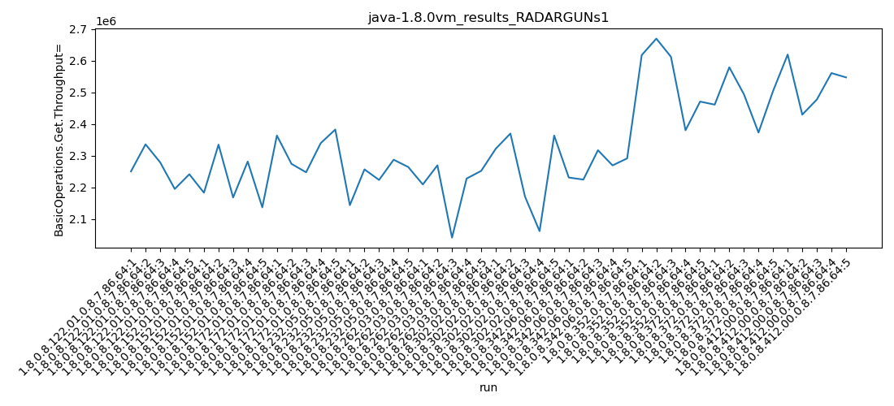
Expected number of iterations: 5
final number of values: 50 out of 50
Pass rate: 100.0%
values: (2040746, 2669630, 2331949.06, 2291161)

** accuracy from all jdks and runs
more is better
MIN: 2040746
MAX: 2669630
AVG: 2331949.06
MED: 2291161
Relative differences 1:
MIN-MAX: 24.0 %
MIN-AVG: 12.0 %
MIN-MED: 11.0 %
MAX-MIN: -31.0 %
MAX-AVG: -14.0 %
MAX-MED: -17.0 %
AVG-MED: -2.0 %
stored to java-1.8.0.properties. sort | uniq that!
2nd avgmed_by_jdk_metric:
values: [2260058.0, 2220620.0, 2321272.6, 2234800.2, 2199656.2, 2257391.2, 2266454.2, 2550127.6, 2482294.4, 2526816.2]
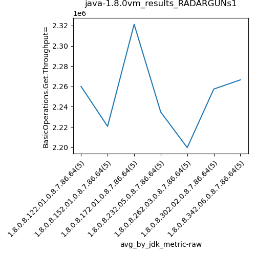
values: [2250074, 2182818, 2339254, 2256606, 2227512, 2321928, 2269090, 2612401, 2494026, 2547131]
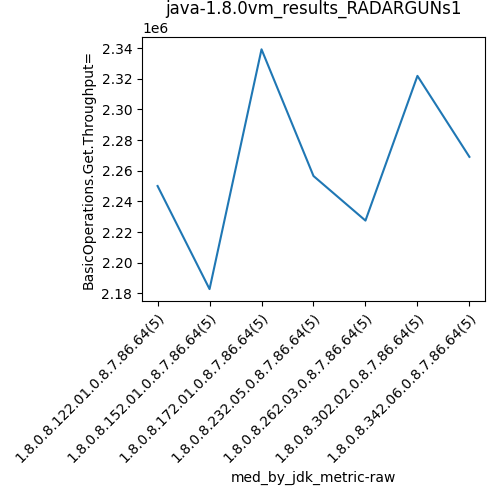
values: (2199656.2, 2550127.6, 2331949.06, 2266454.2)
values: (2182818, 2612401, 2350084.0, 2321928)

** accuracy from all jdks where runs were avged
more is better
MIN: 2199656.2
MAX: 2550127.6
AVG: 2331949.06
MED: 2266454.2
Relative differences 1:
MIN-MAX: 14.0 %
MIN-AVG: 6.0 %
MIN-MED: 3.0 %
MAX-MIN: -16.0 %
MAX-AVG: -9.0 %
MAX-MED: -13.0 %
AVG-MED: -3.0 %
stored to java-1.8.0.properties. sort | uniq that!
** accuracy from all jdks where runs were medianed
more is better
MIN: 2182818
MAX: 2612401
AVG: 2350084.0
MED: 2321928
Relative differences 1:
MIN-MAX: 16.0 %
MIN-AVG: 7.0 %
MIN-MED: 6.0 %
MAX-MIN: -20.0 %
MAX-AVG: -11.0 %
MAX-MED: -13.0 %
AVG-MED: -1.0 %
stored to java-1.8.0.properties. sort | uniq that!
vm_results_RADARGUNs1 - throughput put
Expected number of java-1.8.0 JDKs: 10
1st avgmed_alljdks_metric:
/home/jvanek/git/benchmarks-in-nested-virtualisation-toolchain/final_results/result_processing.py /home/jvanek/git/benchmarks-in-nested-virtualisation-toolchain/final_results/vm_results/vm_results_RADARGUNs1 BasicOperations.Put.Throughput= False
values: [562470, 583939, 569698, 548652, 560290, 545652, 583739, 541996, 570253, 534075, 590871, 568453, 561814, 584836, 595604, 535828, 564136, 555767, 571824, 566031, 552160, 567356, 510215, 556847, 562994, 580449, 592432, 542645, 515332, 590853, 557721, 556106, 579258, 567216, 572819, 654408, 667501, 653093, 594972, 617724, 615290, 644810, 623490, 593212, 626109, 654793, 607395, 619306, 640156, 636774]

Expected number of iterations: 5
final number of values: 50 out of 50
Pass rate: 100.0%
values: (510215, 667501, 582987.28, 572819)

** accuracy from all jdks and runs
more is better
MIN: 510215
MAX: 667501
AVG: 582987.28
MED: 572819
Relative differences 1:
MIN-MAX: 24.0 %
MIN-AVG: 12.0 %
MIN-MED: 11.0 %
MAX-MIN: -31.0 %
MAX-AVG: -14.0 %
MAX-MED: -17.0 %
AVG-MED: -2.0 %
stored to java-1.8.0.properties. sort | uniq that!
2nd avgmed_by_jdk_metric:
values: [565009.8, 555143.0, 580315.6, 558717.2, 549914.4, 564342.2, 566624.0, 637539.6, 620582.2, 631684.8]
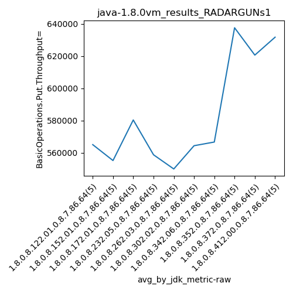
values: [562470, 545652, 584836, 564136, 556847, 580449, 567216, 653093, 623490, 636774]

values: (549914.4, 637539.6, 582987.28, 566624.0)
values: (545652, 653093, 587496.3, 580449)
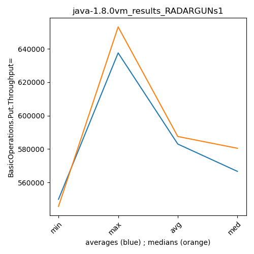
** accuracy from all jdks where runs were avged
more is better
MIN: 549914.4
MAX: 637539.6
AVG: 582987.28
MED: 566624.0
Relative differences 1:
MIN-MAX: 14.0 %
MIN-AVG: 6.0 %
MIN-MED: 3.0 %
MAX-MIN: -16.0 %
MAX-AVG: -9.0 %
MAX-MED: -13.0 %
AVG-MED: -3.0 %
stored to java-1.8.0.properties. sort | uniq that!
** accuracy from all jdks where runs were medianed
more is better
MIN: 545652
MAX: 653093
AVG: 587496.3
MED: 580449
Relative differences 1:
MIN-MAX: 16.0 %
MIN-AVG: 7.0 %
MIN-MED: 6.0 %
MAX-MIN: -20.0 %
MAX-AVG: -11.0 %
MAX-MED: -13.0 %
AVG-MED: -1.0 %
stored to java-1.8.0.properties. sort | uniq that!
vm_results_RADARGUNs1 - response mean time get
Expected number of java-1.8.0 JDKs: 10
1st avgmed_alljdks_metric:
/home/jvanek/git/benchmarks-in-nested-virtualisation-toolchain/final_results/result_processing.py /home/jvanek/git/benchmarks-in-nested-virtualisation-toolchain/final_results/vm_results/vm_results_RADARGUNs1 BasicOperations.Get.ResponseTimeMean True
values: [1510, 1489, 1451, 1587, 1524, 1526, 1572, 1648, 1666, 1726, 1530, 1533, 1497, 1567, 1496, 1698, 1801, 1564, 1644, 1521, 1551, 1524, 1752, 1518, 1684, 1531, 1502, 1786, 1640, 1520, 1748, 1757, 1595, 1483, 1682, 1426, 1382, 1426, 1578, 1451, 1636, 1407, 1443, 1482, 1614, 1379, 1677, 1439, 1466, 1542]
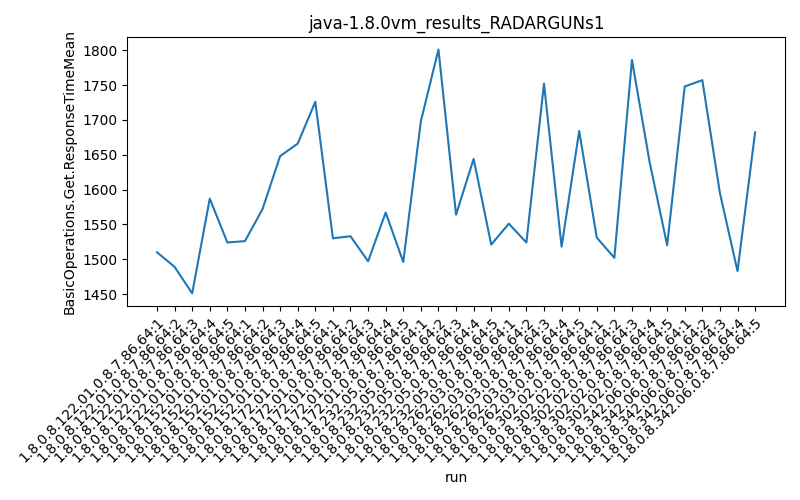
Expected number of iterations: 5
final number of values: 50 out of 50
Pass rate: 100.0%
values: (1379, 1801, 1563.42, 1533)

** accuracy from all jdks and runs
more is worse
MIN: 1801
MAX: 1379
AVG: 1563.42
MED: 1533
Relative differences 1:
MIN-MAX: 31.0 %
MIN-AVG: 15.0 %
MIN-MED: 17.0 %
MAX-MIN: -23.0 %
MAX-AVG: -12.0 %
MAX-MED: -10.0 %
AVG-MED: 2.0 %
stored to java-1.8.0.properties. sort | uniq that!
2nd avgmed_by_jdk_metric:
values: [1512.2, 1627.6, 1524.6, 1645.6, 1605.8, 1595.8, 1653.0, 1452.6, 1516.4, 1500.6]
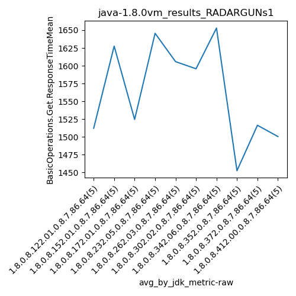
values: [1510, 1648, 1530, 1644, 1551, 1531, 1682, 1426, 1482, 1466]

values: (1452.6, 1653.0, 1563.4199999999998, 1595.8)
values: (1426, 1682, 1547.0, 1531)
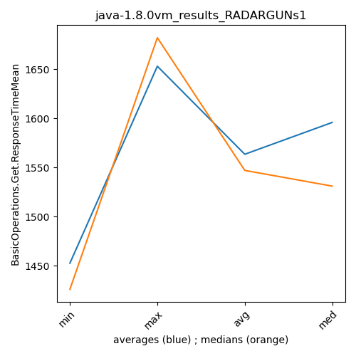
** accuracy from all jdks where runs were avged
more is worse
MIN: 1653.0
MAX: 1452.6
AVG: 1563.4199999999998
MED: 1595.8
Relative differences 1:
MIN-MAX: 14.0 %
MIN-AVG: 6.0 %
MIN-MED: 4.0 %
MAX-MIN: -12.0 %
MAX-AVG: -7.0 %
MAX-MED: -9.0 %
AVG-MED: -2.0 %
stored to java-1.8.0.properties. sort | uniq that!
** accuracy from all jdks where runs were medianed
more is worse
MIN: 1682
MAX: 1426
AVG: 1547.0
MED: 1531
Relative differences 1:
MIN-MAX: 18.0 %
MIN-AVG: 9.0 %
MIN-MED: 10.0 %
MAX-MIN: -15.0 %
MAX-AVG: -8.0 %
MAX-MED: -7.0 %
AVG-MED: 1.0 %
stored to java-1.8.0.properties. sort | uniq that!
vm_results_RADARGUNs1 - response mean time put
Expected number of java-1.8.0 JDKs: 10
1st avgmed_alljdks_metric:
/home/jvanek/git/benchmarks-in-nested-virtualisation-toolchain/final_results/result_processing.py /home/jvanek/git/benchmarks-in-nested-virtualisation-toolchain/final_results/vm_results/vm_results_RADARGUNs1 BasicOperations.Put.ResponseTimeMean True
values: [7090, 7221, 7227, 7464, 7101, 7419, 7294, 7331, 7327, 7307, 7264, 7035, 7217, 7163, 7238, 7458, 7129, 7160, 7630, 7236, 7477, 7289, 7343, 7358, 7190, 7441, 7210, 7172, 7346, 7337, 7550, 7322, 7372, 7149, 7461, 5872, 5965, 5901, 5894, 5915, 6199, 5762, 5767, 6064, 6067, 6038, 6158, 5813, 5974, 5946]
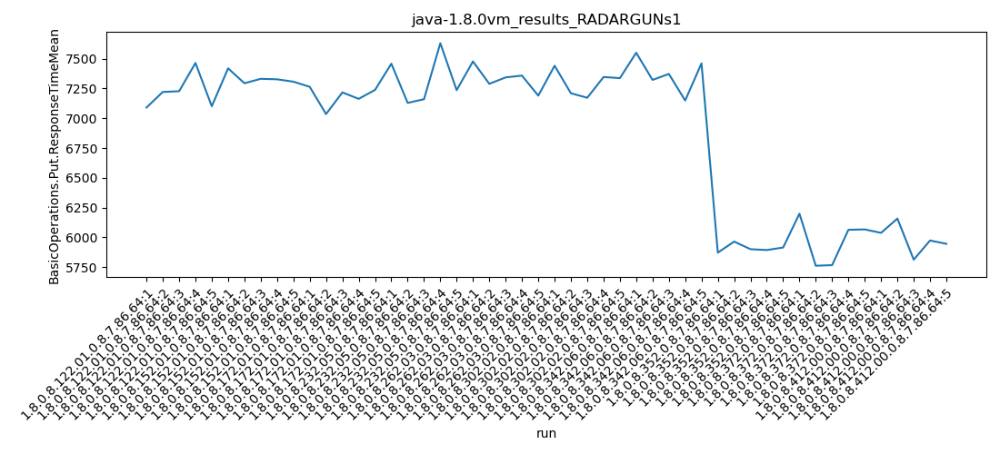
Expected number of iterations: 5
final number of values: 50 out of 50
Pass rate: 100.0%
values: (5762, 7630, 6893.26, 7217)

** accuracy from all jdks and runs
more is worse
MIN: 7630
MAX: 5762
AVG: 6893.26
MED: 7217
Relative differences 1:
MIN-MAX: 32.0 %
MIN-AVG: 11.0 %
MIN-MED: 6.0 %
MAX-MIN: -24.0 %
MAX-AVG: -16.0 %
MAX-MED: -20.0 %
AVG-MED: -4.0 %
stored to java-1.8.0.properties. sort | uniq that!
2nd avgmed_by_jdk_metric:
values: [7220.6, 7335.6, 7183.4, 7322.6, 7331.4, 7301.2, 7370.8, 5909.4, 5971.8, 5985.8]
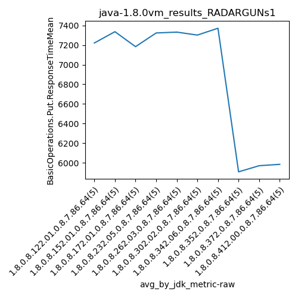
values: [7221, 7327, 7217, 7236, 7343, 7337, 7372, 5901, 6064, 5974]
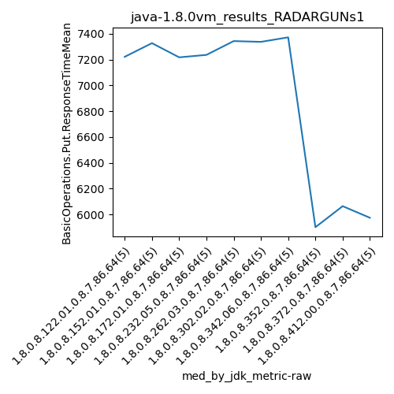
values: (5909.4, 7370.8, 6893.26, 7301.2)
values: (5901, 7372, 6899.2, 7236)
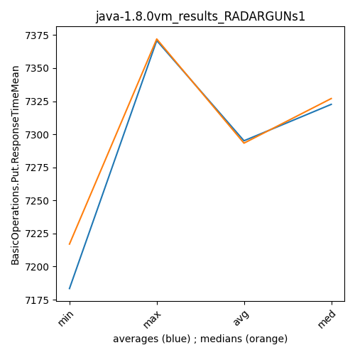
** accuracy from all jdks where runs were avged
more is worse
MIN: 7370.8
MAX: 5909.4
AVG: 6893.26
MED: 7301.2
Relative differences 1:
MIN-MAX: 25.0 %
MIN-AVG: 7.0 %
MIN-MED: 1.0 %
MAX-MIN: -20.0 %
MAX-AVG: -14.0 %
MAX-MED: -19.0 %
AVG-MED: -6.0 %
stored to java-1.8.0.properties. sort | uniq that!
** accuracy from all jdks where runs were medianed
more is worse
MIN: 7372
MAX: 5901
AVG: 6899.2
MED: 7236
Relative differences 1:
MIN-MAX: 25.0 %
MIN-AVG: 7.0 %
MIN-MED: 2.0 %
MAX-MIN: -20.0 %
MAX-AVG: -14.0 %
MAX-MED: -18.0 %
AVG-MED: -5.0 %
stored to java-1.8.0.properties. sort | uniq that!
/home/jvanek/git/benchmarks-in-nested-virtualisation-toolchain/final_results/vm_results/vm_results_RADARGUNs3
java-1.8.0
RADARGUNs1
/home/jvanek/git/benchmarks-in-nested-virtualisation-toolchain/final_results/vm_results/vm_results_DACAPO
java-1.8.0
RADARGUNs1
/home/jvanek/git/benchmarks-in-nested-virtualisation-toolchain/final_results/vm_results/vm_results_J2DBENCH
java-1.8.0
RADARGUNs1
/home/jvanek/git/benchmarks-in-nested-virtualisation-toolchain/final_results/vm_results/vm_results_SPECJBB
java-1.8.0
RADARGUNs1
/home/jvanek/git/benchmarks-in-nested-virtualisation-toolchain/final_results/vm_results/vm_results_JMH
java-1.8.0
RADARGUNs1
pass rates:
vm_results_RADARGUNs1=100.0%
Context:
- vm_results
- RADARGUNs1